TGS 终端图形系统 — 进度汇报
绘制语义（类 SVG）终端图形协议：渲染器只画原语，一切控件语义在程序侧组合
1本期定案：控件语义 → 图形原语
本期完成三项架构定案与一次完整后端重写：
| 决策 | 内容 | 状态 |
|---|---|---|
| 协议 = 绘制语义 | 线上协议只命名绘制原语（8 个 kind），无控件目录；布局归程序（SVG 场景语义），派生外观（radio/switch/progress）与复合控件（list/table）是程序侧组合 | 定案 |
| 渲染器 = 场景画笔 | 渲染器只做「画原语 + 命中 + 焦点」，不持控件状态机目录；新 scene backend（树/命中/焦点/事件/文本编辑）+ paint 端口抽象 |
完成 |
| 双参考后端 | paint_sdl2（软件光栅 + SDL2_ttf 字形合成）与 paint_skia（SkCanvas 抗锯齿圆角矩形 + SkFont），共用同一 paint 端口，-DTGS_USE_SKIA 可选接入 |
完成 |
| 旧工具链后端退役 | 保留模式控件树、布局引擎、控件目录映射整体删除（依赖目录 + 后端模块物理移除）——渲染器不再持任何控件语义 | 完成 |
| BUTTON 退役 | 按钮不是原语：激活是程序策略（点击命中已对任何控件生效）。BUTTON = CONTAINER + LABEL 子控件 + 程序消费 CLICK。值 0 保留，wire 兼容映射到 CONTAINER | 完成 |
第一性判据：一个 kind 是原语 ⟺ 渲染器必须原生持有某种状态/能力，无法用其他 kind 组合表达。按此判据，控件语义整体放弃——协议层只承载机制（server holds mechanism），程序承担全部策略（program holds policy）。
2协议原语目录（7 kind）
| 值 | Kind | 渲染器原生持有 | 组合说明 |
|---|---|---|---|
| 1 | LABEL | 静态文本渲染 | — |
| 2 | INPUT | 文本编辑缓冲（光标），IME 资格 | — |
| 3 | CHECKBOX | 布尔态 | 圆钮外观 = RADIUS 样式组合 |
| 5 | SLIDER | 值 + 范围 + 拖拽捕获 | 只读变体 = 程序忽略拖拽 |
| 8 | CONTAINER | 结构（子控件在程序算好的 rect 上） | 无布局引擎 |
| 11 | SCROLL | 视口状态（滚动偏移、边缘消费） | — |
| 17 | IMAGE | 像素显示 | 资源源待 stream 2（L3 P5） |
退役值（0, 4, 6, 7, 9, 10, 12-19；0=BUTTON：激活是程序策略，按钮 = CONTAINER+LABEL+CLICK 组合）永久保留，合成器解码映射到原语替换——旧程序不炸。
3渲染器重写：scene backend
| 模块 | 职责 | 要点 |
|---|---|---|
scene_core.c | 节点池、绝对几何、命中测试、事件队列、绘制 | 窗口 root 是结构不是控件（命中排除）；事件满队列丢弃 |
scene_backend.c | 完整 tgs_backend vtable（25 项） | 窗口/rect/content/style/IME preedit 覆盖/焦点视觉/空间导航/剪贴板/几何回传；指针契约 button 0 主键、pressed −1 纯移动 |
paint_sdl2.c | paint 端口实现 ① | 软件光栅（圆角盒/边框/裁剪）+ SDL2_ttf 字形 alpha 合成（4bpp Blended 面板） |
paint_skia.cpp | paint 端口实现 ② | SkCanvas 包裹发布帧缓冲：抗锯齿 RRect、SkFont（目录字体管理 + FreeType）、save/clipRect 裁剪对 |
term_view.c | 字符基 | TTF 渲染 + 制表符块字形矩形合成；通过 underlay 通道垫在控件场景下 |
渲染器中立验证：替换整个渲染引擎，协议层、合成器层（nav/window_manager/parser）零改动——vtable 即边界。paint 端口是唯一引擎缝，第三个后端只是再加一个
paint_*.c。
4功能截图
4.1 基础表单

simple_form：label + input + button，scene 后端（SDL2 paint）渲染。
4.2 容器（程序摆位）

容器是纯盒子：子控件 rect 全部由程序计算（SVG 场景语义），渲染器无布局引擎。
4.3 原语总览（SDL2 paint）

8 种绘制原语逐一渲染。文字渲染、颜色、布局经视觉模型验收。
4.4 原语总览（Skia paint）
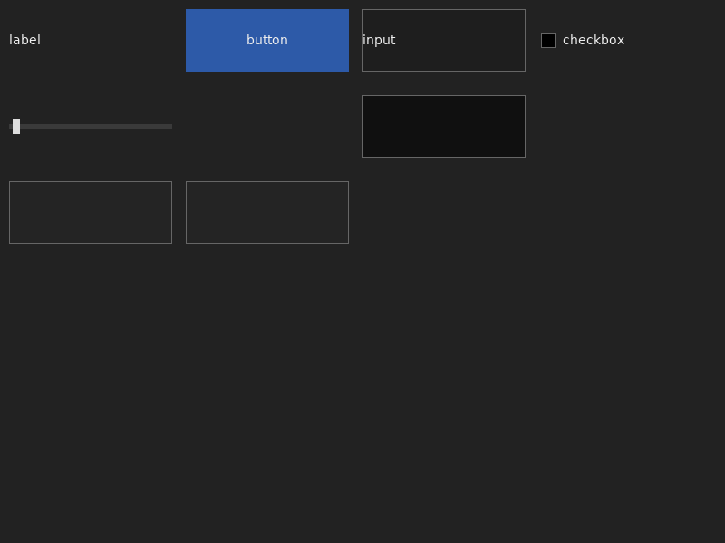
同一场景，-DTGS_USE_SKIA 构建的 Skia paint 端口渲染——抗锯齿圆角、SkFont 字形。两个后端像素级同构的契约由 paint 端口保证。
4.5 控件分列展示（每原语独立渲染 × 三状态）
Button
已退役（= CONTAINER + LABEL）
已退役（= CONTAINER + LABEL）
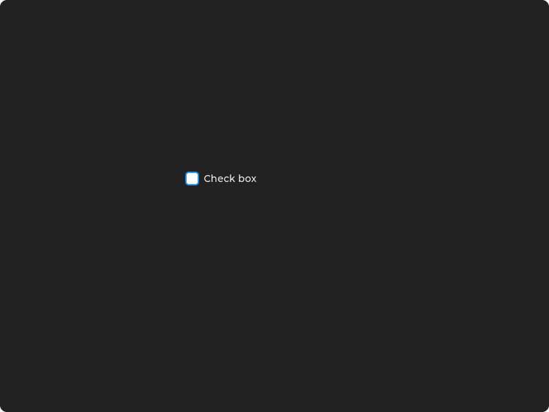
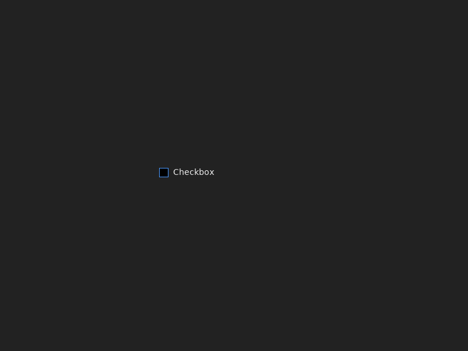
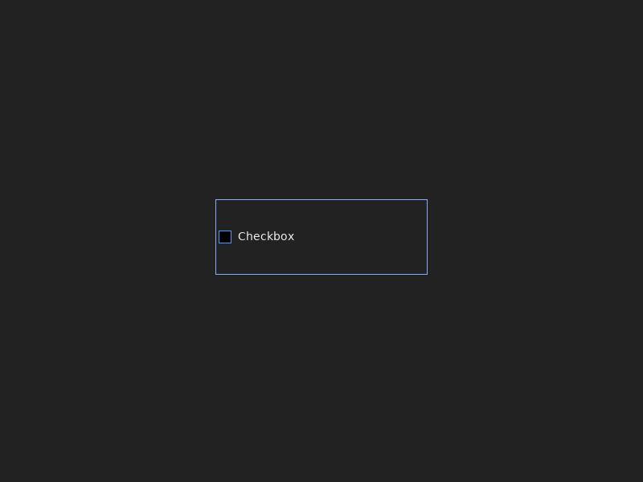
Input
输入框
输入框
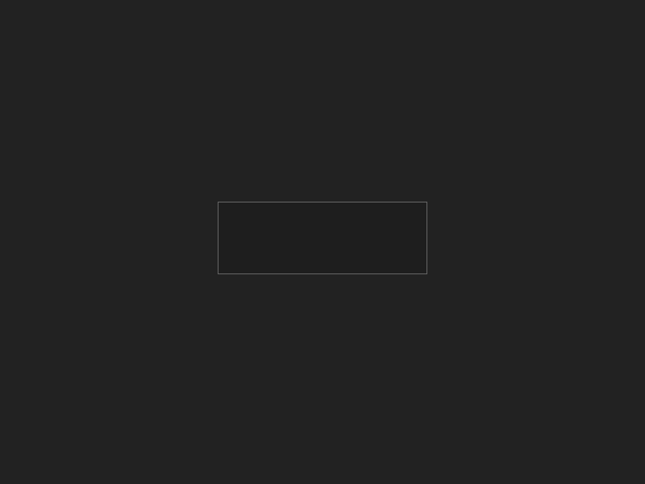
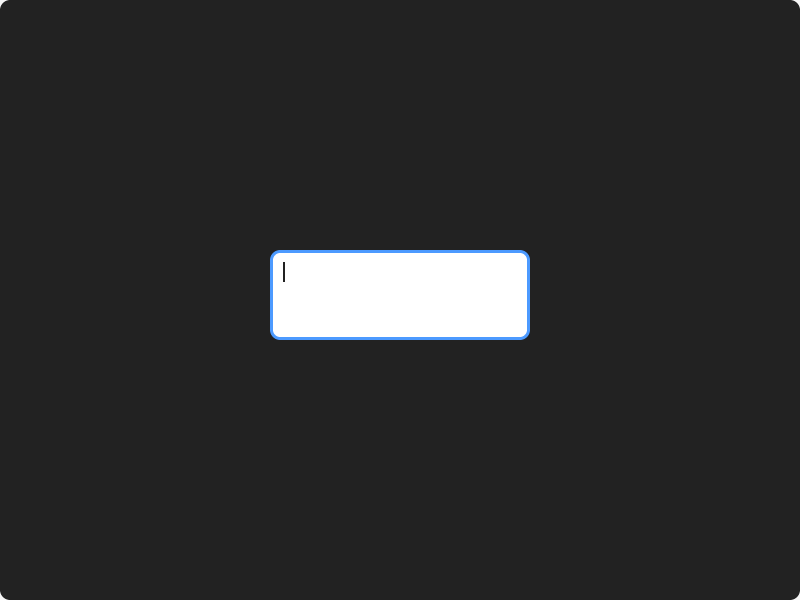

Checkbox
复选框
复选框
Slider
滑块
滑块
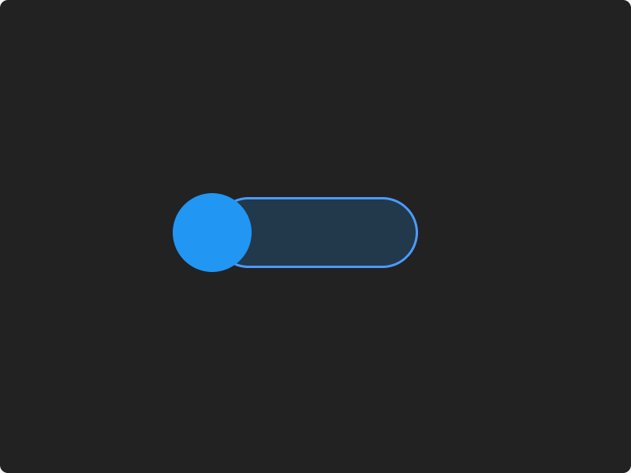
Label
标签（非交互）
标签（非交互）


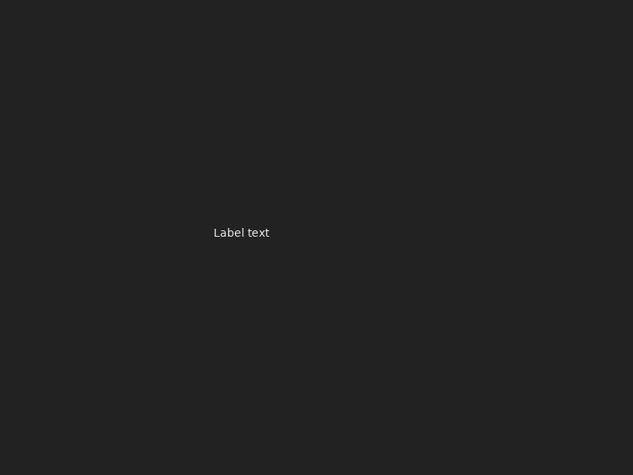
Container
容器
容器
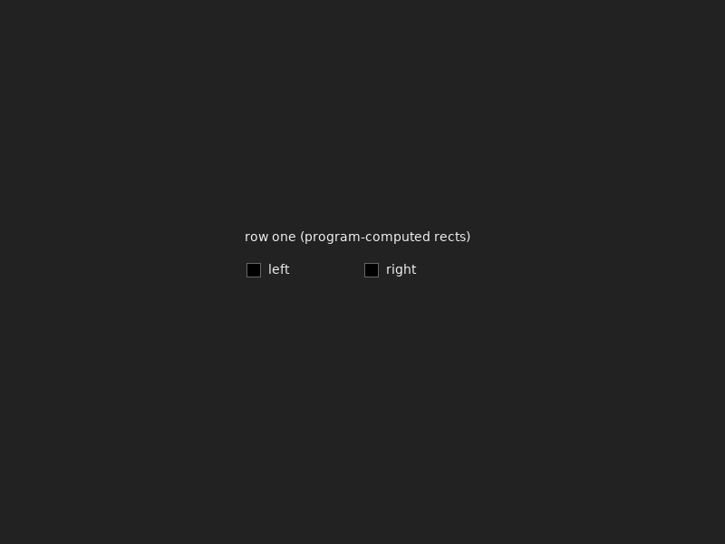
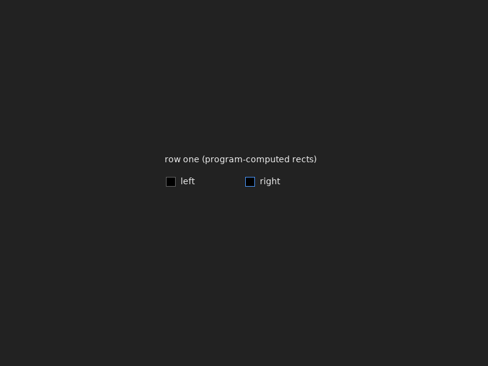
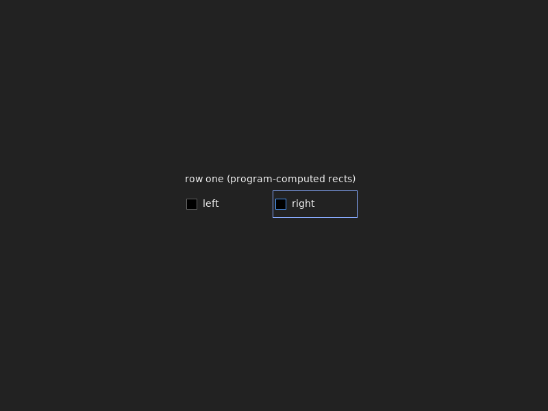
Scroll
滚动视口
滚动视口
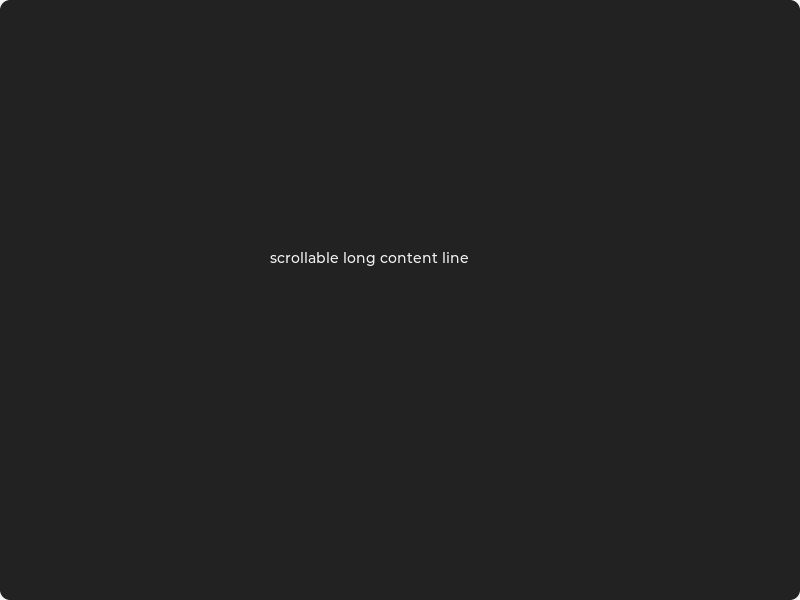
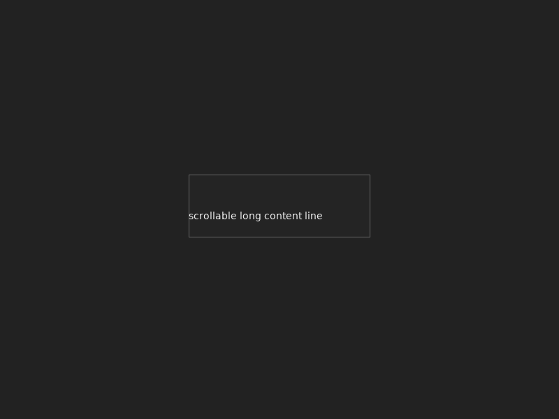

Image
图像（待 resources）
图像（待 resources）


5视觉模型逐张验收
重写后端截图中：24 张 singles（8 原语 × 3 状态）+ library 双后端 + container，全部经视觉模型评审，维度：文字渲染、对比度可读性、对齐间距、一致性。
验收结论：通过。图 1（SDL2）与图 2（Skia）文字全部渲染无缺字无豆腐块；button 蓝底白字、input 深底浅框符合预期；无黑屏、无错位、布局对齐工整。底部空框为空 CONTAINER/SCROLL 原语（程序未设内容，符合语义）。
5.1 评审抓出并修复的渲染缺陷（本期）
| 缺陷 | 视觉表现 | 根因 | 修复 | 复验 |
|---|---|---|---|---|
| 全部控件缺字 | 按钮/输入框空白 | SDL2_ttf Blended 面板为 4bpp ARGB（非 8bpp alpha-only），旧路径直接拒画 | paint_sdl2 补 4bpp 字形 alpha 合成路径（逐像素混色） | ✅ 像素探针 text=39px，视觉确认无缺字 |
| NORMAL 窗口纯黑底 | 截图大面积 (0,0,0) | 场景 root 未实现不透明背景策略 | create_window: NORMAL root 补 0x222222 不透明 bg；TRANSPARENT 保持透出字符基 | ✅ 像素采样主色恢复深灰 |
6质量
| 维度 | 结果 |
|---|---|
| 测试 | 74/74 通过 ×2——同一套行为测试跑在 SDL2 与 Skia 两个后端构建上（build/ 与 build-skia/） |
| D2 探针 | d2_repro PASS——nav 规则 2 键直投同步送达，键值无陈旧 |
| 契约测试 | ContainerHoldsProgramComputedRects——程序设的 rects 分毫不差往返，钉死"渲染器不动程序几何" |
| 视觉验收 | 24 singles + 双后端 library + container，视觉模型逐张评审，缺陷闭环（见 §5） |
| 像素探针 | 自建 C 探针验证按钮填充（12000px）与字形（39px）落墨；PNG 解码采样验证主色 |
| 历史清理 | 全仓 lvgl|lv_obj|lv_group 计数 = 0（src/docs/brain/audits 强校验） |
7效率与嵌入式结论（本期量化）
| 问题 | 实测/结论 |
|---|---|
| 协议交互效率够吗？ | 编码 463k 帧/s（2.2µs/帧）；拖拽 60Hz = 13 kbit/s，比 PTY 吞吐低两个数量级。瓶颈在光栅化，不在协议。 |
| 200MHz 无 GPU 嵌入式？ | 协议折算 5-10µs/帧（0.2-2% CPU），同硬件光栅化占 25-100%——差两个数量级，协议永远不会先成瓶颈。 |
| 提效手段 | 手写 itoa 替代 snprintf = 7.8×（唯一现在值得做）；程序侧 diff + 批量 flush 是帧数杠杆（UI 框架层职责）；二进制帧保留武器不启用（小数值下文本更紧凑）。 |
8提交与下一步
8.1 本期提交
aeefee6feat(renderer)!: replace LVGL with scene backend (SDL2 paint port)410355cfeat(renderer): Skia paint port — second reference backend (TGS_USE_SKIA)f1a6314chore(docs,brain): purge rendering-engine history722d187chore(brain): decision record — control semantics abandoned, graphics primitives pursued
8.2 下一步（按优先级）
- 程序侧控件库（libtgs-ui）——图形语义定案后价值闭环的最大缺口：radio 互斥组、list = SCROLL+子控件、diff/重排。组合过程中的每个摩擦点都是协议缺口的真实信号。
- Skia 后端工程化——
libskia.a目前为本地 vendor 构建（826MB 全量）；收敛到最小目标 + 构建脚本入库，CI 可选开启。 - P5 resources（L3 缺口）：
TGS_STREAM_RESOURCE资源上传/缓存，gate IMAGE 与 FONT_SIZE。 - 编码优化：手写 itoa（7.8×，约 30 行，零风险）——待真实负载需要时落地。